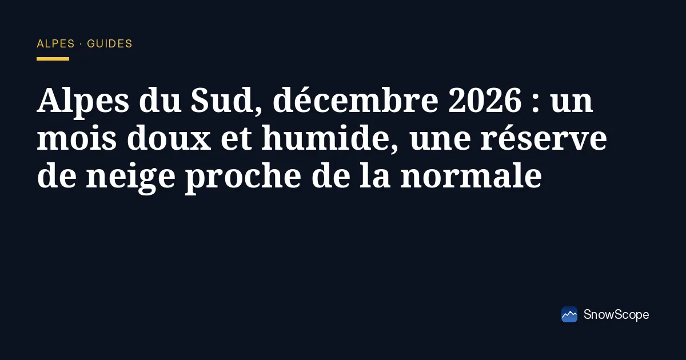
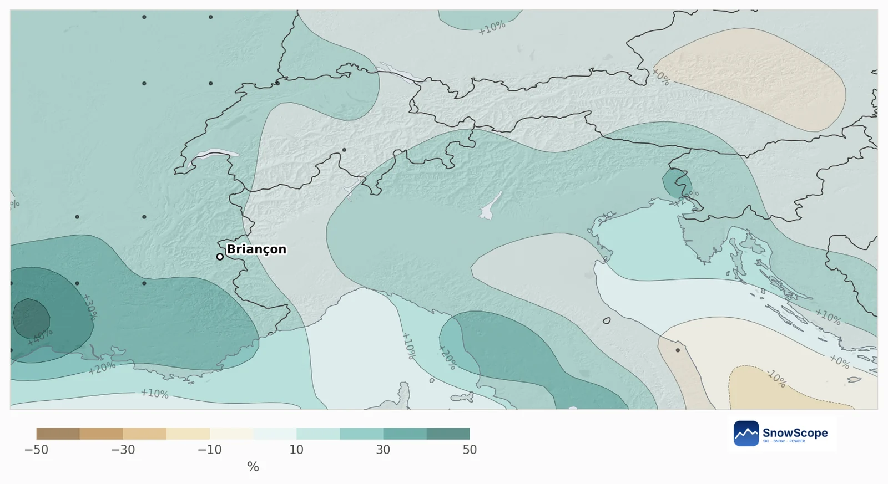

Alpes du Sud, décembre 2026 : un mois doux et humide, une réserve de neige proche de la normale
La neige de décembre est de l'eau stockée en montagne pour la fonte printanière. Les Alpes du Sud connaîtront un mois plus chaud et plus humide, mais l'épaisseur de neige au 31 décembre devrait rester à son niveau habituel. La plupart de la chaîne ne montre pas de tendance claire ; seul le versant ouest français penche vers des conditions plus sèches.
Consultez les prévisions neige en temps réel pour Southern Alps sur l'application SnowScopeHauteurs de neige, alertes poudreuse et carte 3D, gratuitement.

Aucun signal sur la majeure partie de la chaîne
Quand on compare chaque zone de 10 km de montagne à ses 45 décembres passés, quatre zones sur cinq — de Briançon à Sestriere et vers Cuneo — ne penchent ni d'un côté ni de l'autre. La frange ouest près de Grenoble et les vallées françaises au-delà penchent vers des conditions plus sèches, mais nulle part ne penche vers plus de neige.
La probabilité d'un décembre plus humide que d'habitude varie de 31 % à 55 % dans la région, avec une médiane de 45 %. Cette variabilité reflète la complexité des Alpes du Sud : quelques vallées peuvent recevoir plus de neige tandis que d'autres restent maigres.
La chaleur oriente les prévisions ; la pluie tombe plus bas
Les 51 prévisions du centre météorologique européen sont quasi unanimes sur un point : 88 % d'entre elles prédisent décembre 1,7 °C plus chaud que la moyenne habituelle. Cette chaleur est la partie la plus fiable de ce bulletin. Les précipitations augmentent aussi — 14 % au-dessus de la normale de 101 mm — et 61 % des simulations sont plus humides que la moyenne.
Pour le stockage de neige, l'équilibre compte. L'air chaud et l'humidité méditerranéenne signifient que les pics élevés reçoivent de la neige tandis que les pentes basses et les cols voient de la pluie. L'épaisseur de neige dépend de cet équilibre. Résultat : les épaisseurs en fin d'année restent proches de ce que les décembres passés ont laissé.


Versant français : 61 cm au 31 décembre
Les Alpes du Sud françaises (Serre-Chevalier, Vars et Risoul, Orcières, Valberg, Dévoluy) connaîtront un décembre 1,5 °C au-dessus de la normale et des précipitations 8 % plus élevées que d'habitude. Les perspectives de neige nouvelle sont de 44 cm, légèrement en dessous des 48 cm typiques que les 45 dernières années ont apportées.
Au 31 décembre, l'épaisseur prévue est de 61 cm. Cela correspond presque exactement à la normale de 62 cm. Trois décembres passés — 2023, 2022 et 2018 — correspondent le plus étroitement à la tendance de cette prévision. L'éventail des épaisseurs probables va de 49 cm à 85 cm, préparez-vous donc à des conditions typiques de début de saison.
Versant italien : stable à 64 cm
De l'autre côté de la frontière en Vallée d'Aoste et Piémont (Courmayeur, Sestriere, Monterosa, Pila), décembre sera 1,4 °C plus chaud que la normale, avec des précipitations 7 % au-dessus de la moyenne passée. Les perspectives conservent la neige nouvelle à 43 cm, identique à un décembre typique.
Au 31 décembre, les épaisseurs sont prévues à 64 cm, là encore conforme à la normale de 45 ans. La moitié des membres de la prévision montrent une neige plus profonde que d'habitude, l'autre moitié plus superficielle. Les analogues les plus proches sont à nouveau 2023, 2018 et 2022. Les skieurs du versant italien devraient s'attendre à des conditions intermédiaires plutôt qu'extrêmes.
Ce que ce bulletin signifie pour votre séjour
Un bulletin proche de la normale est rassurant mais peu exaltant. Il dit : réservez votre séjour de décembre sans crainte d'une pénurie de neige, mais ne vous attendez pas à un mois exceptionnel. La chaleur prévue est le signal auquel nous faisons le plus confiance, visez donc les pentes d'altitude et les versants nord-facings au début décembre, où l'air froid persiste.
Un bulletin comme celui-ci ne peut pas prédire les tempêtes individuelles. Quand une dépression méditerranéenne apparaît dans les prévisions de 7 jours, les Alpes du Sud peuvent stocker une neige substantielle en un ou deux jours. Le début décembre est généralement plus calme ; guettez les tempêtes à partir de la mi-décembre. Comparez les stations individuelles sur la carte SnowScope — l'épaisseur de neige varie fortement d'une vallée à l'autre.
Conseils aux skieurs
- Visez les remontées les plus élevées et les pentes nord-facings au début décembre, quand l'air est le plus froid et la pluie la moins probable en altitude.
- Consultez les prévisions de 7 jours chaque semaine pour les dépressions méditerranéennes : elles apportent la plupart de la neige de décembre à cette région en rafales brèves.
- Explorez la carte SnowScope avant de réserver pour voir quelle vallée accumule plus de neige ; la différence entre des stations voisines peut être de 20 à 30 cm.
- Si de la neige fraîche arrive, visez les pentes supérieures dans les heures qui suivent ; les jours plus doux peuvent ramollir ou faire fondre rapidement la couverture de début de saison.
- Préparez des couches et une veste imperméable : décembre apporte autant d'eau que de neige, et la limite entre les deux se déplace avec l'altitude et l'heure de la journée.
À propos de ces chiffres
Les hauteurs de neige des stations sont la neige la plus épaisse sur le haut du domaine à la date indiquée ; ce sont des estimations pour une zone, pas une mesure en un point. Les prévisions peuvent changer. Consultez toujours le bulletin d'avalanche officiel avant le hors-piste.
Citer ce bulletin
Pour la recherche, l'enseignement ou la presse : chiffres et graphiques réutilisables librement sous CC BY 4.0 avec cette citation.
SnowScope (2026), Alpes du Sud, décembre 2026 : un mois doux et humide, une réserve de neige proche de la normale, https://snowscope.app/blog/fr/2026/11/southern-alps-december-2026-snow-outlook.html, consulté le 2026-11-10
SnowScope (Atlas Labs). (2026, November 10). Alpes du Sud, décembre 2026 : un mois doux et humide, une réserve de neige proche de la normale. SnowScope snow reports. https://snowscope.app/blog/fr/2026/11/southern-alps-december-2026-snow-outlook.html
BibTeX
@misc{snowscope2026southernalpsdecember2026,
author = {{SnowScope (Atlas Labs)}},
title = {Alpes du Sud, décembre 2026 : un mois doux et humide, une réserve de neige proche de la normale},
year = {2026},
month = nov,
howpublished = {\url{https://snowscope.app/blog/fr/2026/11/southern-alps-december-2026-snow-outlook.html}},
note = {Published 2026-11-10 09:31 UTC; accessed 2026-11-10}
}· CC BY 4.0 · Méthodes, données et outils →
Suivre Southern Alps
Gratuit : un message quand la neige arrive, et la météo chaque matin.